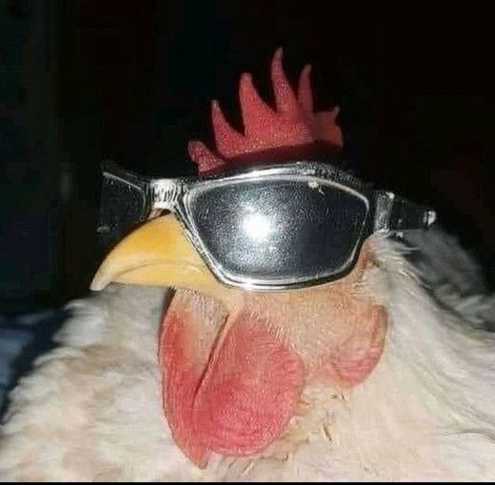

Me chamo Rafael Knebel, sou nascido em 15 de fevereiro de 2007, na cidade de Rondonópolis e no estado de Mato Grosso, tenho 18 anos e sou solteiro. Atualmente sou estudante de Bacharelado em Ciência da Computação na Universidade Federal da Fronteira Sul (UFFS).
Com interesse em tecnologia, inovação e estratégia, busco desenvolvimento acadêmico e profissional, aprimorando minhas habilidades em programação. Tenho perfil analítico e estratégico focado em aprendizado contínuo e crescimento na área tecnológica.
 Rafael GitHub| Curso | Instituição | Data de Início/Término |
|---|---|---|
| Ensino Fundamental | Escola Estadual Sagrado Coração de Jesus | 2013-2021 |
| Ensino Médio | CEM Júlia Kubistech | 2022-2024 |
| Bacharelado | Universidade da Fronteira Sul | 2025-Cursando |
Habilidades